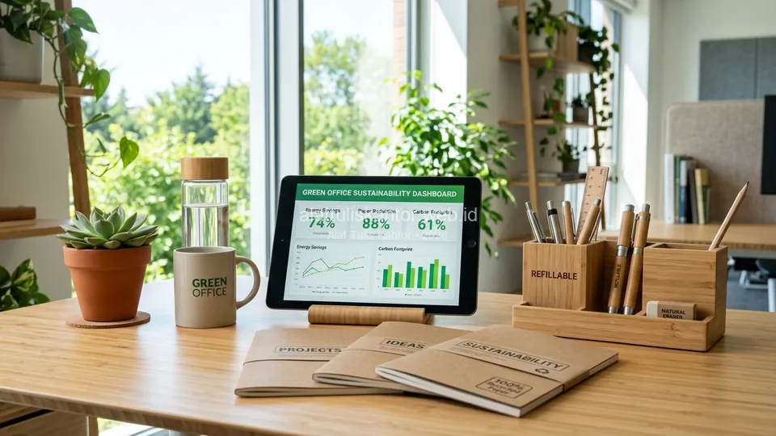
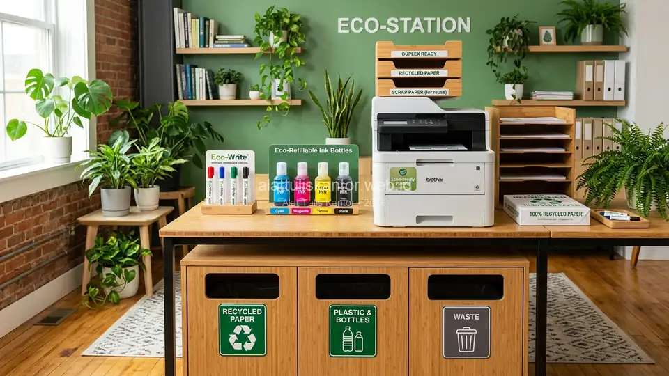

Kebijakan kantor hijau (green office) semakin banyak diterapkan perusahaan sebagai bagian dari komitmen keberlanjutan lingkungan, namun banyak pihak yang khawatir penghematan ATK justru akan menghambat kelancaran administrasi sehari-hari. Padahal, dengan strategi yang tepat, kebijakan kantor hijau dapat berjalan beriringan dengan efisiensi administrasi, bahkan menghasilkan penghematan anggaran pengadaan alat tulis kantor yang sangat signifikan tanpa mengorbankan produktivitas kerja.
Artikel ini membahas cara menerapkan kebijakan kantor hijau untuk menghemat ATK secara nyata tanpa menghambat proses administrasi, lengkap dengan langkah praktis yang dapat langsung diimplementasikan. ATK Prima Distribusi mendukung inisiatif kantor hijau dengan produk-produk ramah lingkungan dan pasokan grosir terpercaya. Konsultasi pengadaan dapat dilakukan via WhatsApp di 0889-8964-3555.
Fakta Keberlanjutan: Penerapan strategi kantor hijau terbukti mampu memangkas volume pembelian kertas baru hingga 30-40% dan menekan limbah plastik kantor hingga lebih dari 50% dalam tahun pertama.
Ringkasan Kebijakan Kantor Hijau untuk Hemat ATK
Kebijakan kantor hijau yang efektif menghemat ATK tanpa menghambat administrasi mencakup empat area utama:
- Digitalisasi dokumen non-krusial: Mengurangi pencetakan dokumen internal yang tidak membutuhkan format fisik legal.
- Standarisasi pencetakan dua sisi (duplex): Menetapkan duplex sebagai setelan default pada semua printer kantor.
- Penggunaan produk isi ulang: Beralih ke spidol whiteboard dan tinta printer refill guna meminimalkan sampah kemasan plastik sekali pakai.
- Sistem daur ulang kertas bekas: Memanfaatkan kertas bekas cetak satu sisi untuk draft coretan internal.
Kombinasi keempat langkah ini terbukti dapat mengurangi konsumsi kertas hingga 30-40 persen tanpa mengganggu kelancaran proses administrasi yang benar-benar membutuhkan dokumen fisik sesuai SOP pengadaan General Affair.
Mengapa Kekhawatiran Kantor Hijau Menghambat Administrasi Sering Berlebihan
Banyak yang mengasosiasikan kantor hijau dengan pembatasan ketat penggunaan kertas yang justru merepotkan proses kerja. Padahal, sebagian besar strategi kantor hijau yang efektif justru berfokus pada eliminasi pemborosan yang sebenarnya tidak produktif, seperti mencetak dokumen yang hanya dibaca sekali lalu dibuang, bukan menghalangi pencetakan dokumen yang memang benar-benar dibutuhkan dalam format fisik.
Ketika tim memahami batasan fungsional antara arsip legal berkekuatan hukum dengan dokumen koordinasi harian, peralihan ke sistem ramah lingkungan akan meningkatkan kecepatan alur kerja digital tanpa mengurangi validitas administrasi kantor.
4 Strategi Kantor Hijau untuk Hemat ATK Tanpa Hambat Administrasi
1. Digitalisasi Dokumen Non-Krusial
Identifikasi jenis dokumen yang sebenarnya tidak memerlukan format fisik, seperti memo internal, notulen rapat rutin, atau draf dokumen yang masih dalam tahap revisi. Alihkan dokumen-dokumen ini ke format digital yang dapat diakses melalui email atau platform kolaborasi internal, sementara dokumen yang benar-benar memerlukan tanda tangan basah atau bersifat legal tetap dicetak pada kertas HVS berkualitas seperti biasa.
2. Standarisasi Pencetakan Dua Sisi (Duplex)
Atur pengaturan default printer kantor untuk mencetak dua sisi secara otomatis pada dokumen internal, kecuali diubah manual untuk kebutuhan khusus. Langkah sederhana ini dapat mengurangi konsumsi kertas hingga hampir separuh untuk dokumen multi-halaman tanpa mengurangi kelengkapan informasi yang tersampaikan.
3. Beralih ke Produk Isi Ulang (Refillable)
Gunakan spidol whiteboard isi ulang, tinta printer refill, dan correction tape refillable untuk mengurangi limbah plastik dari kemasan sekali pakai, sekaligus menghemat anggaran karena harga isi ulang umumnya jauh lebih murah dibanding membeli produk baru secara utuh.
4. Sistem Daur Ulang Kertas Internal
Kumpulkan kertas bekas cetak satu sisi (misprint atau dokumen draf kedaluwarsa) sebagai kertas coret-coret untuk catatan internal yang tidak memerlukan kualitas kertas baru, sebelum akhirnya kertas tersebut benar-benar didaur ulang melalui pihak ketiga berlisensi.

Tabel Estimasi Dampak Kebijakan Kantor Hijau terhadap Konsumsi ATK
| Strategi Implementasi | Estimasi Pengurangan Konsumsi | Dampak terhadap Kelancaran Administrasi |
|---|---|---|
| Digitalisasi dokumen non-krusial | 15% - 20% pengurangan kertas | Minimal, hanya dokumen non-esensial |
| Pencetakan dua sisi (duplex) | Hingga 40% untuk dokumen tebal | Tidak ada, informasi tetap utuh |
| Produk isi ulang (spidol, tinta) | 30% - 50% hemat pos terkait | Kualitas tulisan dan cetak tetap prima |
| Daur ulang kertas coret internal | 10% - 15% hemat kertas baru | Sangat praktis untuk memo informal |
Cara Mengukur Keberhasilan Kebijakan Kantor Hijau
- Bandingkan total konsumsi riil: Audit total rim kertas dan cartridge tinta per kuartal sebelum dan sesudah kebijakan diterapkan.
- Hitung penghematan anggaran riil: Pantau saldo kas penghematan dari penurunan frekuensi pembelian barang baru.
- Lakukan survei kepuasan karyawan: Pastikan fleksibilitas kerja tetap terjaga dan kebijakan tidak menimbulkan hambatan birokrasi baru.
- Dokumentasikan metrik keberlanjutan: Catat estimasi pohon yang diselamatkan dan volume plastik yang dicegah sebagai bahan laporan keberlanjutan (ESG) korporasi.
Mengatasi Resistensi Karyawan terhadap Kebijakan Baru
Perubahan kebiasaan mencetak dokumen sering kali menghadapi resistensi awal dari karyawan yang sudah terbiasa dengan pola kerja lama. Sosialisasikan manfaat kebijakan kantor hijau secara jelas, termasuk dampak positifnya terhadap lingkungan dan potensi penghematan anggaran yang dapat dialokasikan untuk kebutuhan lain, seperti peningkatan fasilitas kerja atau kegiatan tim.
Libatkan perwakilan tiap divisi dalam proses identifikasi dokumen mana saja yang benar-benar perlu dicetak, sehingga kebijakan yang diterapkan terasa sebagai hasil kolaborasi solutif, bukan aturan sepihak dari manajemen.
Studi Kasus: Penghematan Anggaran PT Cipta Solusi Digital
PT Cipta Solusi Digital menerapkan kebijakan kantor hijau dengan empat strategi di atas secara bertahap selama satu tahun penuh. Hasilnya, konsumsi kertas HVS perusahaan berkurang sekitar 32 persen dibanding tahun sebelumnya, sementara anggaran spidol dan tinta printer berkurang hingga 40 persen setelah beralih sepenuhnya ke produk isi ulang.
Yang terpenting, survei internal menunjukkan tidak ada keluhan signifikan terkait hambatan administrasi, karena kebijakan yang diterapkan fokus pada eliminasi pemborosan, bukan pembatasan kebutuhan riil karyawan.
Kunci Sukses: Keberhasilan PT Cipta Solusi Digital didorong oleh kemudahan akses perlengkapan isi ulang berkualitas tinggi di setiap lantai kerja.
Cara Memulai Kebijakan Kantor Hijau dengan Produk yang Tepat
Untuk mempelajari produk-produk ramah lingkungan dan paket perlengkapan isi ulang yang mendukung kebijakan kantor hijau, kunjungi panduan pengadaan ATK ramah lingkungan serta telusuri katalog lengkap produk ATK kantor kami.
Anda juga dapat meninjau profil perusahaan dan sertifikasi pasokan kami melalui halaman Tentang Kami sebagai referensi awal implementasi kebijakan pengadaan hijau di institusi Anda.
Mengintegrasikan Kantor Hijau dengan Budaya Perusahaan
Kebijakan kantor hijau akan lebih berkelanjutan jika diintegrasikan sebagai bagian dari budaya perusahaan, bukan sekadar aturan administratif yang dipaksakan dari atas. Pertimbangkan untuk memberikan penghargaan kecil bagi divisi yang berhasil mencapai target pengurangan konsumsi ATK tertentu, atau menjadikan capaian ini sebagai bagian dari laporan tanggung jawab sosial perusahaan (CSR) yang dapat dibanggakan kepada klien dan mitra bisnis.
Komunikasikan pencapaian kebijakan kantor hijau secara berkala kepada seluruh karyawan, misalnya melalui buletin internal atau papan pengumuman digital, sehingga setiap individu merasa menjadi bagian dari kontribusi positif perusahaan terhadap lingkungan, yang pada akhirnya memperkuat komitmen jangka panjang terhadap kebijakan tersebut.
Pertanyaan yang Sering Diajukan (FAQ)
Kesimpulan
Kebijakan kantor hijau dan efisiensi administrasi bukanlah dua hal yang saling bertentangan, melainkan dapat berjalan beriringan jika diterapkan dengan strategi yang tepat. Dengan digitalisasi dokumen non-krusial, pencetakan dua sisi, produk isi ulang, dan sistem daur ulang internal, perusahaan dapat menghemat anggaran ATK secara signifikan sekaligus berkontribusi terhadap kelestarian lingkungan tanpa mengorbankan kelancaran kerja sehari-hari.